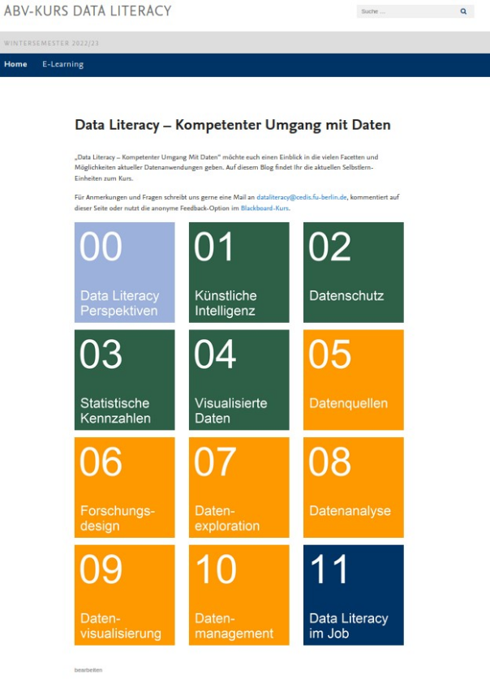
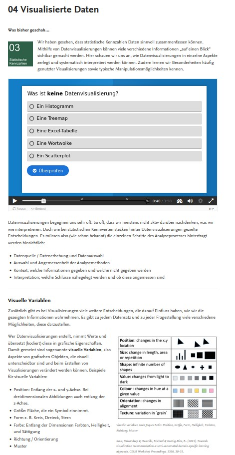
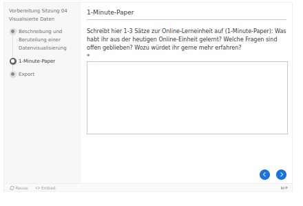

Multimediales Blended Learning mit WordPress und H5P
Toolbeschreibung
Content-Management-Systeme wie WordPress sind Plattformen zur einfachen Onlinekommunikation und -publikation. Mit WordPress können Dokumente, Bilder, Videos etc. (beispielsweise aus Open Educational Resources) intuitiv und ansprechend mit verbindendem Text zu einer abgestimmten Lerneinheit im Webseitenlayout kombiniert werden. Die Texte dienen dabei als „roter Faden“ und verbinden die jeweiligen Learning Nuggets inhaltlich.
H5P ist ein Open-Source-Tool, mit dem interaktive Inhalte wie Auswahlaufgaben, Umfragen und interaktive Videos erstellt werden können. Mit einem H5P-Plug-in in WordPress können einzelne H5P-Elemente erstellt und durch einen Shortcode flexibel in die WordPress-Seiten (ab WordPress-Version 3.8.1) eingebunden werden.
Voraussetzungen & Zielgruppen
Voraussetzung für die Umsetzung dieses Konzepts ist die datenschutzkonforme Bereitstellung eines WordPress-Systems durch die Hochschule sowie die Möglichkeit, H5P-Elemente auf den Seiten einzubinden. Die Bearbeitung der Onlinelerneinheiten durch die Studierenden kann sowohl an Desktop-PCs als auch an mobilen Endgeräten über den Internet-Browser erfolgen. Gegebenenfalls kann es zudem erwünscht sein, die Lerneinheiten nur für Studierende des jeweiligen Kurses oder der jeweiligen Institution zugänglich zu machen. Als Alternative zu einem Content-Management-System kann auch ein Lernmanagementsystem mit H5P-Integration eingesetzt werden.
Blended Learning basierend auf interaktiven Lerneinheiten im Inverted-Classroom-Format (auch Flipped Classroom, vgl. Sams, 2012) eignet sich insbesondere für Angebote zu Data Literacy mit einer sehr heterogenen Zielgruppe, da die interaktiven Lerneinheiten als gemeinsame Wissensbasis dienen können. Das hier vorgestellte Konzept wird als Seminar mit 5 ECTS im überfachlichen Wahlpflichtbereich angeboten, das an der Freien Universität allen Bachelorstudierenden aller Fachrichtungen (außer Lehramt) und aller Semester offensteht.
Kompetenzen
Das Seminar soll Einblick in die gesellschaftliche Bedeutung und praktische Verwendung von Daten geben. Dabei werden sowohl kommunikative Kompetenzen wie der diskursive Austausch zu gesellschaftlichen Themen mit Datenbezug als auch technische Kompetenzen wie die Erstellung einer Datenvisualisierung mit R geschult. Zusätzlich wird die Reflexion des eigenen Umgangs mit Daten und des aktuellen Wissensstandes angeregt. Studierende lernen, Datenthemen aus ihrer (Fach-)Perspektive für eine interdisziplinäre Zielgruppe aufzubereiten und in fachübergreifenden Teams zusammenzuarbeiten.
Lerninhalte & Methoden
Der Kurs vermittelt basale Datenkompetenzen entlang der Bereiche Gesellschaft, Wissenschaft und Arbeitswelt: Die Studierenden lernen nach einer einführenden Präsenzsitzung zu Begriff und Bedeutung von Daten zuerst grundlegende Aspekte kennen, die für die Auseinandersetzung mit Daten im Alltag beziehungsweise als mündige Bürger:innen grundlegend sind. Dazu gehören die Interpretation von Statistiken und von Datenvisualisierungen sowie gesellschaftliche Auswirkungen von Daten und rechtliche Aspekte. Daran anschließend üben die Studierenden die Arbeit mit Daten im wissenschaftlichen Kontext entlang des Datenzyklus. Zum Abschluss wird speziell auf die Verwendung von Daten in Arbeitsfeldern abseits der Wissenschaft eingegangen und ein von den Studierenden gewünschtes Thema vertieft. Angelehnt an das Prozessmodell zur Daten-Wertschöpfung (Schüller et al., 2019) wird zuerst das alltagsnähere Dekodieren eingeübt, bevor das eigene Arbeiten mit Daten, das Kodieren, im Vordergrund steht. Aspekte der Datenethik werden in allen Einheiten begleitend bearbeitet.

Für alle Sitzungen (abgesehen von der ersten und letzten Sitzung) gibt es vorbereitende Onlinelerneinheiten. Diese werden jeweils nach der vorherigen Präsenzsitzung freigeschaltet und können von den Studierenden innerhalb von mehreren Tagen bearbeitet werden. In die Onlinelerneinheiten sind kurze interaktive H5P-Elemente integriert. Die H5P-Inhaltstypen „Dialog Cards“, „Timeline“ oder „interactive Video“ werden primär für die Bereitstellung von Informationen verwendet. Mithilfe von Aufgaben der Inhaltstypen „Multiple Choice“, „Drag and Drop“, „Drag the Words“ oder „Question Set“ (Kombination unterschiedlicher Aufgabentypen) können die Studierenden ihren Wissensstand überprüfen. Am Ende jeder Onlinelerneinheit reflektieren die Studierenden ihren bisherigen Lernstand schriftlich und überlegen sich weiterführende Fragen zu der Thematik (One-Minute-Paper, umgesetzt über den H5P-Inhaltstyp „Documentation Tool“). Bei einem Teil der Onlinelerneinheiten wird zusammen mit dem One-Minute-Paper eine weiterführende Aufgabe gestellt.
Die Präsenzsitzungen knüpfen an die offenen Fragen der Studierenden sowie deren Antworten zu den Aufgaben an. Anhand eines kurzen Quiz zu den Inhalten der Onlinelerneinheit wird der Wissensstand anonym überprüft und auf eventuell bestehende Missverständnisse eingegangen. Im Anschluss wird das jeweilige Thema anhand von kurzen Inputs, praktischen Übungen und Diskussionen vertieft. Für die Übungen in der Präsenzsitzung werden auch WordPress-Seiten eingesetzt, um die Aufgaben zu kommunizieren und digitale Inhalte wie Datensätze und Webseiten leichter erreichbar zu machen.
Alle Studierenden gestalten mindestens einmal im Semester selbst einen Input. Dieser Input soll über klassische Referate hinaus Interaktion ermöglichen, beispielsweise indem eine vorgestellte Datenbank gemeinsam exploriert oder eine Aufgabe gemeinsam bearbeitet wird. Studierende haben durch den eigenen Input die Möglichkeit, sich eingehend mit Daten in ihrem Interessens- bzw. Fachgebiet auseinanderzusetzen und ein selbst gewähltes Thema fachübergreifend zu präsentieren.

Erkenntnisse & Erfahrungen
Die Möglichkeiten von WordPress und insbesondere die vielfältigen Optionen von H5P können schnell überfordern. Die Beschränkung auf einen Teil der verfügbaren H5P-Elemente sowie gegebenenfalls eine Beratung zum Einsatz von H5P sind empfehlenswert.
Hinsichtlich der Aufteilung der Inhalte zwischen Online und Präsenz empfiehlt es sich entsprechend der Inverted-Classroom-Methode, die Wissensvermittlung in den Onlinelerneinheiten umzusetzen und die Präsenzsitzungen für Austausch und Übungen zu nutzen. Bei dem Einüben praktischer Fähigkeiten in Präsenz können Studierende sich direkt austauschen und dadurch voneinander lernen. Um den Anpassungsbedarf der Onlinelerneinheiten so gering wie möglich zu halten, ist es empfehlenswert, beständige Inhalte (zum Beispiel deskriptive Statistik) als Onlinelerneinheiten zu integrieren und Inhalte mit starkem Aktualisierungsdruck (zum Beispiel rechtliche Regulierung von KI-Anwendungen) in den Präsenzsitzungen zu behandeln.
Eine gängige Herausforderung bei Inverted-Classroom-Formaten besteht darin, Studierende zur kontinuierlichen Vorbereitung zu motivieren. Wir haben gute Erfahrungen damit gemacht, die WordPress-Seiten so ansprechend und kurz wie möglich zu gestalten. Es sind nur diejenigen Inhalte in den Onlinelerneinheiten verpflichtend, die für die gemeinsame Vertiefung in der Präsenzsitzung nötig sind. Weiterführende Informationen können als optionale Links bereitgestellt werden. Um die Bearbeitungsquote hochzuhalten, ist es zudem hilfreich, Verbindlichkeit herzustellen. Das kann beispielsweise über die wöchentliche Abgabe eines One-Minute-Papers oder die Überprüfung des Lernstandes in der Präsenzsitzung erfolgen. Das One-Minute-Paper am Ende der Onlinelerneinheiten regt einerseits die Reflexion der Studierenden an und bietet andererseits dem Lehrpersonal die Möglichkeit, Feedback zu erhalten und mithilfe der Fragen von Studierenden die anschließende Präsenzsitzung vorzubereiten. Für die Vorbereitung beziehungsweise die Feinabstimmung der Präsenzsitzung sollte ausreichend Zeit eingeplant werden. In unserer Erfahrung geben die meisten Studierenden das One-Minute-Paper kurz vor Abgabefrist oder auch verspätet ab, sodass es sinnvoll ist, die Abgabefrist entsprechend zu planen.

In der ersten Durchführung waren die Input-Themen an das Thema der jeweiligen Sitzung gekoppelt, um einen zu großen thematischen Bruch zwischen dem Input der Studierenden und dem weiteren Thema der Sitzung zu vermeiden. Ab der zweiten Durchführung konnte das Thema des Inputs unabhängig von dem Thema der jeweiligen Sitzung frei gewählt werden, wodurch die Qualität der Studierenden-Inputs deutlich gesteigert wurde. Studierende können sich somit frei mit der Frage auseinandersetzen, welche Rolle Daten in ihrem Fach und in ihrem beruflichen und privaten Leben spielen, und ein Thema vorstellen, das sie wirklich interessiert. Der Herausforderung des thematischen Übergangs zwischen Studierenden-Input und dem Rest der Sitzung wurde gelöst, indem der Input von Studierenden immer zu Beginn der Sitzung gehalten wurde. Der Einstieg in das Hauptthema der Sitzung wurde über die Besprechung der One-Minute-Paper sowie ein thematisch passendes Quiz erleichtert.
Ein fach- und semesterübergreifendes Angebot zu Data Literacy hat den Vorteil, dass Studierende unterschiedliche Perspektiven einbringen und voneinander lernen können. Die daraus resultierende Heterogenität hinsichtlich des Vorwissens und der Interessen ist eine Herausforderung, die wir in dieser Dimension nicht erwartet haben: An dem Kurs nehmen sowohl Studierende teil, die bereits Statistik-Veranstaltungen abgeschlossen haben, als auch Studierende, die sich noch nie mit der Verwendung von Daten beschäftigt haben. Unserer Erfahrung nach und basierend auf den sehr positiven Lehrevaluationen kann dieser starken Heterogenität durch interaktives Blended Learning begegnet werden. Die Onlinelerneinheiten können als gemeinsame Wissensgrundlage für die Präsenzsitzungen dienen, wobei insbesondere eine sinnvolle Verzahnung zwischen Online- und Präsenzteilen, das Eingehen auf Interessen und Wissensstände der Studierenden sowie die Bereitstellung der nötigen personellen Ressourcen als zentral für eine erfolgreiche Durchführung betrachtet werden.
Hilfreiche Links
- H5P-WordPress-Plug-in: https://github.com/h5p/h5p-wordpress-plugin
- H5P-Elemente in Kursen des KI-Campus: https://ki-campus.org/themen/daten
- Weitere Informationen zu Inverted Classroom: https://www.e-teaching.org/lehrszenarien/vorlesung/inverted_classroom
- Siehe auch den Artikel Multimediale Formate mit dem Tool H5P in diesem Band.
Autorinnenprofil
Selina Reinhard studierte Psychologie in Göttingen, Ankara und Berlin. Sie arbeitet an der Freien Universität Berlin an der Weiterentwicklung der digitalen Lehre mit Fokus auf datenbasierte Entscheidungen, digitale Zukunftstechnologien und Data Literacy.